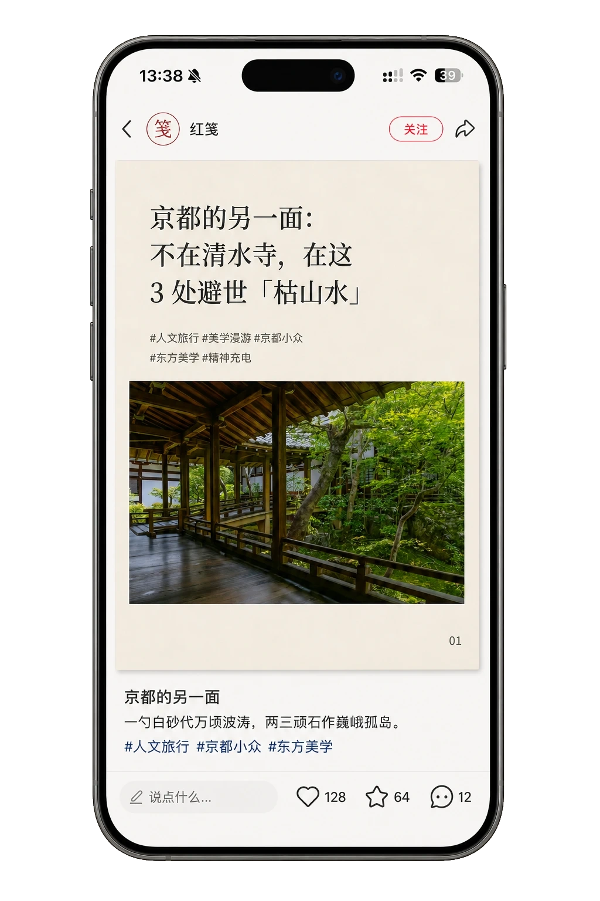

原句原意，妥帖安放。
原文、链接、图片都保留。长文接着排，代码照原样；没有写下的结语，也不会替你补上。
红笺 · 小红书图文排版
把原稿和配图交给 AI，自动分页、标出重点，
导出可以发布的图片。保留你的原句，也保留你的表达。
适用于支持 Agent Skills 的 AI 工具
安装后使用 · 本地生成图片

原文、链接、图片都保留。长文接着排，代码照原样；没有写下的结语，也不会替你补上。
宋体立题，黑体铺文。用贴近字脚的笔触标出重点，把余下的空间交还阅读。
导出连续 PNG，也留下 Markdown、原图与配置。换色、改笔触、再排一版，都有据可循。
京都的另一面，藏在三处安静庭园里。
一篇文字，换一种心情。选个颜色，翻看封面与内页。
朱砂 · 写观点，也写心事
左右滑动看样张，点开可放大阅读。
用一条命令装好红笺，再把原稿交给你的 Agent。
npx skills add blainehuang1028/redleaf-skill --skill redleaf采用开放的 Agent Skills 格式，可安装到多种 AI 工具。所用 Agent 需要能读写文件、执行本地命令；首次排版会准备运行依赖与字体。
运行上方命令，选择所用 Agent；也可下载技能包手动安装。
提供 Markdown 与图片，告诉它选什么颜色、哪里要强调。
检查手机预览，取走编号图片。发布到哪里，由你决定。
请用红笺排版这份 Markdown，保留原文，使用朱砂主题，导出 3:4 图片和预览。
红笺是可下载的 Agent 技能，排版在本地运行。这个网站展示真实导出样张，并提供技能包与使用指南。
不限于 Codex、Claude Code 或 Cursor。支持 Agent Skills、能读写文件并执行本地命令的 Agent，可以按技能说明运行红笺。安装工具已提供多种 Agent 适配，见 Skills CLI 支持列表。未提供技能安装入口的工具，也可尝试让它读取 SKILL.md 并执行说明；是否可用取决于该工具的权限与运行环境。
首次安装需要下载依赖、浏览器和开源字体。准备完成后，使用本地图片的文章可以离线排版，无需连接社交账号。
红笺不会自动加品牌或 AI 水印。纸纹由本地程序绘制，页脚默认仅显示页码，也可填写作者。代码采用 MIT 许可，字体采用 SIL OFL 1.1。你提供的文章和图片需有相应使用权。
支持标题、段落、强调、引用、列表、表格、代码与图片。长文自动分页，图片与正文一起编排。数学公式和 Mermaid 暂不自动渲染；无法容纳的表格单行会提示调整。

{kind=link}
{kind=link}
{kind=link}